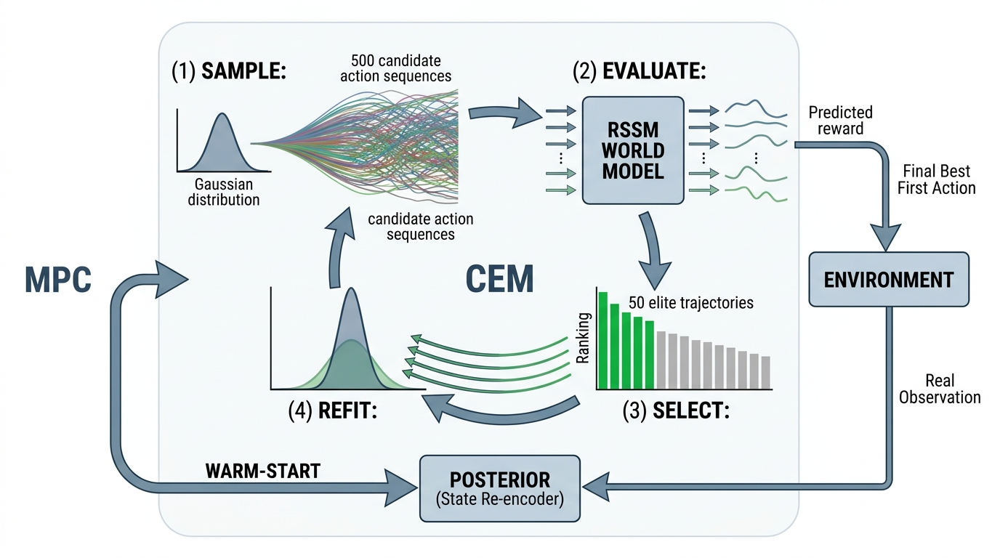
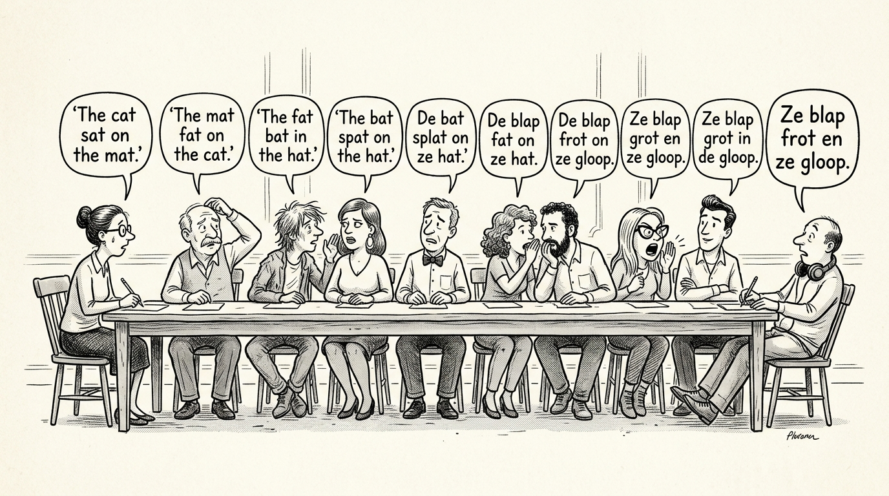

Prerequisites
This section is a hands-on recipe that integrates everything from Sections 44.1 and 44.2. You will need PyTorch, Gymnasium, NumPy, and Matplotlib installed. The code builds directly on the Recurrent State-Space Model (RSSM) implementation (Listing 44.1), the evidence lower bound (ELBO) loss (Listing 44.2), and the training loop (Listing 44.4). Familiarity with model predictive control (MPC) is helpful but not required; we derive the algorithm from first principles.
Prediction tells us what will happen. Counterfactual reasoning tells us what would have happened. Planning tells us what to do. A model-based planner uses the world model as a mental simulator: it imagines many possible action sequences, evaluates each one by rolling out the world model, and selects the action sequence that leads to the best predicted outcome. This section builds a complete planner using the Cross-Entropy Method (CEM), trains it on the Pendulum environment, and then confronts the fundamental failure mode of model-based planning: compound error accumulation, where small per-step prediction errors snowball into catastrophic multi-step inaccuracy. Understanding and diagnosing this failure mode is essential for deploying world model planners in scientific discovery, where a wrong multi-step prediction can waste days of wet-lab time.
1. Model Predictive Control with Learned Dynamics
A robot chemist stares at a half-finished reaction, 500 possible next moves flickering through its learned simulator in under a second, yet it commits to just one, watches what actually happens, and immediately replans from scratch. That loop is Model Predictive Control (MPC), a planning framework with a simple structure: at each time step, solve an optimization problem to find the best action sequence over a future horizon \(H\), execute only the first action, observe the real next state, and re-plan. The re-planning step is critical: it corrects for prediction errors by grounding the planner in the actual state after each step. The MPC loop is illustrated in Figure 44.5.
Formally, at time \(t\) with current state \(z_t = (h_t, s_t)\), MPC solves:
$$ a^*_{t:t+H} = \arg\max_{a_{t:t+H}} \sum_{k=0}^{H-1} \gamma^k \hat{r}(z_{t+k}, a_{t+k}) $$
where \(\hat{r}\) is the world model's reward predictor, \(\gamma\) is a discount
factor, and the RSSM's imagine() method supplies the dynamics
\(z_{t+k+1} = f_\text{wm}(z_{t+k}, a_{t+k})\). After solving, the agent executes
only \(a^*_t\) in the real environment and observes the next real state. It then
re-encodes that state through the posterior and re-plans from scratch. This
"plan, execute one step, re-plan" loop is the heartbeat of MPC.
The re-planning loop is what makes MPC robust to model inaccuracy. Even if the world model's five-step prediction drifts significantly from reality (as we will measure in Section 5), the agent only commits to one step before re-anchoring itself to the real state. The practical horizon of trust is therefore one step (where the model is most accurate), not five steps (where compound error has accumulated). The longer planning horizon serves only to provide direction, not precision: it tells the agent which way to go, even if it cannot predict exactly where it will end up. This is analogous to a scientist planning a five-experiment campaign: the plan provides strategic direction, but after each experiment the scientist revises the plan based on the actual result.
The re-planning loop explains when to act, but it leaves open the question of how to choose the best action sequence at each step.
2. The Cross-Entropy Method (CEM) for Action Optimization
Without a reliable optimizer for this planning step, a world model planner defaults to random search, which scales so poorly that useful plans become impossible in action spaces with more than a handful of dimensions. The Cross-Entropy Method solves this bottleneck.
The optimization problem in MPC is typically non-convex and cannot be solved in closed form. We need a derivative-free optimizer (an optimization algorithm that does not require computing gradients of the objective function) that can handle the world model as a black box (even though the model is differentiable, CEM is often more robust in practice). The Cross-Entropy Method works by iteratively sampling action sequences from a distribution, evaluating them in the world model, and refitting the distribution to the top-performing samples.
The Cross-Entropy Method is a population-based optimization algorithm that maintains a probability distribution (typically a diagonal Gaussian, where each dimension is an independent Gaussian with its own mean and variance) over the solution space and iteratively narrows it toward high-performing regions. It matters because it provides a simple, parallelizable way to solve the non-convex planning problem without requiring gradient computation, making it compatible with any black-box simulator or learned model. The mechanism works in three repeated steps: sample a large batch of candidate solutions from the current distribution, evaluate all candidates and rank them by objective value, then refit the distribution to only the top fraction (the "elites"), thereby concentrating probability mass on promising regions. Prefer CEM over gradient-based planners when the reward landscape is noisy, discontinuous, or multi-modal; prefer gradient-based methods (such as backpropagation through the model) when the landscape is smooth and the model is fully differentiable, as gradients converge faster in that regime. Figure 44.3.1 illustrates the CEM planning loop inside a world model.

import torch
import numpy as np
class CEMPlanner:
"""Cross-Entropy Method planner using a learned world model.
At each step:
1. Sample N action sequences from a Gaussian distribution
2. Evaluate each sequence by rolling out the world model
3. Refit the Gaussian to the top-K sequences
4. Repeat for several iterations
5. Return the mean of the final distribution
"""
def __init__(
self,
rssm,
action_dim: int,
horizon: int = 5,
n_candidates: int = 500,
n_elite: int = 50,
n_iterations: int = 5,
action_low: float = -2.0,
action_high: float = 2.0,
gamma: float = 0.99,
momentum: float = 0.1,
):
"""
Args:
rssm: trained RSSM world model
action_dim: dimension of the action space
horizon: planning horizon (number of steps to look ahead)
n_candidates: number of action sequences to sample
n_elite: number of top sequences to keep for refitting
n_iterations: CEM refinement iterations
action_low: minimum action value (for clamping)
action_high: maximum action value (for clamping)
gamma: reward discount factor
momentum: blend factor with previous plan (for temporal smoothness)
"""
self.rssm = rssm
self.action_dim = action_dim
self.horizon = horizon
self.n_candidates = n_candidates
self.n_elite = n_elite
self.n_iterations = n_iterations
self.action_low = action_low
self.action_high = action_high
self.gamma = gamma
self.momentum = momentum
# Warm-start: carry forward the previous plan
self.prev_mean = None
@torch.no_grad()
def plan(self, h: torch.Tensor, s: torch.Tensor) -> np.ndarray:
"""Select an action by CEM planning in the world model.
Args:
h: (1, det_size) current deterministic state
s: (1, stoch_size) current stochastic state
Returns:
Best action as a numpy array of shape (action_dim,).
"""
device = h.device
# Initialize sampling distribution
mean = torch.zeros(self.horizon, self.action_dim, device=device)
std = torch.ones(self.horizon, self.action_dim, device=device)
# Warm start from previous plan (shift by one step)
if self.prev_mean is not None:
mean[:-1] = self.prev_mean[1:]
mean[-1] = 0.0 # new final step gets zero mean
for iteration in range(self.n_iterations):
# Sample candidate action sequences
noise = torch.randn(
self.n_candidates, self.horizon, self.action_dim,
device=device
)
candidates = mean.unsqueeze(0) + std.unsqueeze(0) * noise
candidates = candidates.clamp(self.action_low, self.action_high)
# Evaluate each candidate by rolling out the world model
# Expand initial state to match candidates
h_expanded = h.expand(self.n_candidates, -1)
s_expanded = s.expand(self.n_candidates, -1)
result = self.rssm.imagine(h_expanded, s_expanded, candidates)
rewards = result["reward_preds"].squeeze(-1) # (N, H)
# Discounted return
discounts = self.gamma ** torch.arange(
self.horizon, device=device, dtype=torch.float32
)
returns = (rewards * discounts).sum(dim=1) # (N,)
# Select elite candidates
elite_indices = returns.topk(self.n_elite).indices
elite_actions = candidates[elite_indices] # (K, H, act_dim)
# Refit distribution to elites
new_mean = elite_actions.mean(dim=0)
new_std = elite_actions.std(dim=0).clamp(min=0.01)
# Momentum update for stability
mean = (
self.momentum * mean
+ (1 - self.momentum) * new_mean
)
std = new_std
# Save mean for warm-starting the next planning step
self.prev_mean = mean.clone()
# Return the first action of the best plan
return mean[0].cpu().numpy()
def reset(self):
"""Reset warm-start state (call at episode start)."""
self.prev_mean = NoneSeveral design choices deserve attention. The warm-start mechanism carries forward the previous plan, shifted by one step: positions 1 through \(H-1\) of the old plan become positions 0 through \(H-2\) of the new plan, and position \(H-1\) is initialized to zero. This exploits the fact that consecutive planning problems are similar, since the agent only moved one step. Without warm-starting, CEM must rediscover the plan from scratch at every step, which is both slower and produces jerky, inconsistent actions. The momentum parameter blends the CEM update with the previous mean, further smoothing the plan across iterations. In short: a world model planner does not search reality; it searches its own imagination, so the quality of the plan can never exceed the quality of the model.
A robotic chemistry platform must plan a sequence of synthesis actions: add reagent A (0-5 mL), heat to temperature T (20-200 C), stir for duration D (1-60 min), then add reagent B (0-5 mL) and cool. The action space is four-dimensional (volume A, temperature, duration, volume B), and each sequence of 5 actions represents one synthesis recipe. The CEM planner samples 500 random recipes, evaluates each by rolling out the world model to predict the yield and purity, keeps the top 50, refits the distribution, and converges to a high-yield recipe in 5 iterations. The entire planning computation typically takes on the order of 200 ms on a modern GPU, compared to the 4-hour wall-clock time of a real synthesis. The planner then executes only the first action (add reagent A at the planned volume), observes the actual intermediate state (spectroscopic reading of the mixture), re-encodes through the posterior, and re-plans the remaining steps. This interleaving of model-based planning and real observation is the standard operating mode for self-driving laboratories (Chapter 55).
With the CEM optimizer in hand, we can now wire it into the full training and evaluation pipeline to see whether imagination-based planning actually outperforms acting at random.
3. End-to-End Recipe: Train, Plan, Evaluate
The complete recipe integrates all components: collect data from the Gymnasium Pendulum environment, train an RSSM world model, build a CEM planner, and evaluate the planner against a random baseline.
import gymnasium as gym
import numpy as np
import torch
import matplotlib.pyplot as plt
def run_world_model_planner_experiment(
env_name: str = "Pendulum-v1",
n_collection_episodes: int = 100,
n_training_epochs: int = 200,
n_eval_episodes: int = 20,
planning_horizon: int = 5,
seed: int = 42,
):
"""Complete recipe: collect data, train RSSM, plan, evaluate.
Args:
env_name: Gymnasium environment name
n_collection_episodes: episodes for initial data collection
n_training_epochs: RSSM training epochs
n_eval_episodes: episodes for evaluating the planner
planning_horizon: CEM planning horizon
seed: random seed
Returns:
Dictionary with training history, evaluation results, and
compound error measurements.
"""
torch.manual_seed(seed)
np.random.seed(seed)
# ---- Phase 1: Data Collection ----
print("Phase 1: Collecting trajectories with random policy...")
env = gym.make(env_name)
obs_dim = env.observation_space.shape[0]
action_dim = env.action_space.shape[0]
action_low = float(env.action_space.low[0])
action_high = float(env.action_space.high[0])
def random_policy(obs):
return env.action_space.sample()
trajectories = collect_trajectories(env, random_policy, n_collection_episodes)
print(f" Collected {len(trajectories)} trajectories, "
f"total steps: {sum(len(t['observations']) for t in trajectories)}")
# ---- Phase 2: Train World Model ----
print("\nPhase 2: Training RSSM world model...")
device = torch.device("cuda" if torch.cuda.is_available() else "cpu")
rssm = RSSM(
obs_dim=obs_dim,
action_dim=action_dim,
det_size=128,
num_categoricals=16,
num_classes=16,
hidden_size=128,
).to(device)
history = train_world_model(
rssm, trajectories,
num_epochs=n_training_epochs,
batch_size=32,
seq_len=50,
lr=3e-4,
)
# ---- Phase 3: Evaluate Planner ----
print("\nPhase 3: Evaluating CEM planner...")
rssm.eval()
planner = CEMPlanner(
rssm=rssm,
action_dim=action_dim,
horizon=planning_horizon,
n_candidates=500,
n_elite=50,
n_iterations=5,
action_low=action_low,
action_high=action_high,
)
planned_returns = evaluate_planner(
env, rssm, planner, n_eval_episodes, device
)
random_returns = evaluate_random(env, n_eval_episodes)
print(f"\n Random policy return: {np.mean(random_returns):.1f} "
f"(+/- {np.std(random_returns):.1f})")
print(f" CEM planner return: {np.mean(planned_returns):.1f} "
f"(+/- {np.std(planned_returns):.1f})")
# ---- Phase 4: Diagnose Compound Error ----
print("\nPhase 4: Diagnosing compound error...")
error_profile = diagnose_compound_error(
rssm, trajectories[:10], max_horizon=15, device=device
)
return {
"training_history": history,
"planned_returns": planned_returns,
"random_returns": random_returns,
"error_profile": error_profile,
}
def evaluate_planner(env, rssm, planner, n_episodes, device):
"""Evaluate a CEM planner on a Gymnasium environment."""
returns = []
for ep in range(n_episodes):
obs, _ = env.reset()
planner.reset()
h, s = rssm.initial_state(1, device)
total_reward = 0.0
done = False
while not done:
obs_t = torch.tensor(
obs, dtype=torch.float32, device=device
).unsqueeze(0)
# Encode current observation through posterior
action_np = planner.plan(h, s)
action_t = torch.tensor(
action_np, dtype=torch.float32, device=device
).unsqueeze(0)
# Update RSSM state
h = rssm.sequence_step(h, s, action_t)
s, _, _ = rssm.posterior(h, obs_t)
# Execute in real environment
obs, reward, terminated, truncated, _ = env.step(action_np)
total_reward += reward
done = terminated or truncated
returns.append(total_reward)
return returns
def evaluate_random(env, n_episodes):
"""Evaluate a random policy for baseline comparison."""
returns = []
for _ in range(n_episodes):
obs, _ = env.reset()
total_reward = 0.0
done = False
while not done:
action = env.action_space.sample()
obs, reward, terminated, truncated, _ = env.step(action)
total_reward += reward
done = terminated or truncated
returns.append(total_reward)
return returnscollect_trajectories and train_world_model functions are from Listing 44.4.4. Horizon-Dependent Error Accumulation
The fundamental limitation of model-based planning is compound error: small per-step prediction errors accumulate across multiple steps until predictions diverge from reality. This accumulation determines the maximum useful planning horizon and the scope of decisions the planner can make.
Mental Model

Think of compound error like a game of telephone played across a chain of translators. The first translator mishears a word slightly; the second translator, working only from the first translator's version, introduces another small drift; by the tenth translator the message may be unrecognizable. Each translator is your world model at one time step: it receives the previous step's (slightly wrong) output as its input and adds its own small error on top. The critical insight is that each error does not just add to the total; it changes the input for every subsequent step, so errors can compound multiplicatively rather than simply stacking. Shortening the chain (using a shorter planning horizon) or periodically resetting from the original message (re-observing the real state) are the two fundamental remedies, which correspond exactly to the MPC strategies described in this section.
Consider a world model with single-step prediction error \(\epsilon_1\). If errors were independent and additive, the \(H\)-step error would grow as \(\epsilon_H = \sqrt{H} \cdot \epsilon_1\) (by the central limit theorem). In practice, the growth is often worse because errors feed back through the dynamics: an error in \(z_{t+1}\) shifts the input to the prediction of \(z_{t+2}\), which shifts the input to \(z_{t+3}\), and so on. If the dynamics are Lipschitz continuous (where the function's output changes by at most \(L\) times the change in its input, for some constant \(L\) called the Lipschitz constant), the worst-case error growth is exponential:
$$ \epsilon_H \leq \epsilon_1 \sum_{k=0}^{H-1} L^k = \epsilon_1 \cdot \frac{L^H - 1}{L - 1} $$For \(L > 1\) (unstable or chaotic dynamics), the error grows exponentially and the model becomes useless after a few steps. For \(L < 1\) (stable, damped dynamics), the error saturates at \(\epsilon_1 / (1 - L)\). Most real environments have regions of both stability and instability, so the practical error growth is somewhere between \(\sqrt{H}\) and exponential, depending on the state.
Checkpoint
So far: compound error arises because each prediction step feeds its (slightly wrong) output as input to the next step; when the dynamics have a Lipschitz constant \(L > 1\) this feedback causes exponential error growth, while \(L < 1\) causes error to saturate, and real systems typically mix both regimes.
Common Misconception
A frequent misconception is that a longer planning horizon always produces better plans, so you should set the horizon as large as your compute budget allows. This is wrong: beyond the point where compound error dominates the reward signal, the planner is optimizing against the model's hallucinations rather than against reality, and a longer horizon actively degrades performance. Always use the compound error diagnostic (Listing 44.12) to find the maximum trustworthy horizon and set the planner's horizon at or below that value.
There is no universal "correct" planning horizon. In a stable chemical reaction (Lipschitz constant \(L \approx 0.9\)), a 20-step horizon is perfectly reliable. In a chaotic fluid simulation (\(L > 1\)), even a 3-step horizon produces garbage predictions. The compound error diagnostic (Listing 44.12) should be the first analysis you run when deploying a world model planner on a new environment. It tells you the maximum horizon at which the model's predictions are trustworthy, and therefore the maximum planning horizon you should use.
def diagnose_compound_error(
rssm,
test_trajectories: list,
max_horizon: int = 15,
device: torch.device = torch.device("cpu"),
) -> dict:
"""Measure prediction error as a function of rollout horizon.
For each test trajectory, encodes the first few steps through the
posterior, then rolls out the prior for increasing horizons and
compares to ground truth.
Args:
rssm: trained RSSM model
test_trajectories: list of trajectory dicts
max_horizon: maximum rollout horizon to test
device: torch device
Returns:
Dictionary with per-horizon RMSE, growth rate, and
recommended maximum horizon.
"""
rssm.eval()
errors_by_horizon = {h: [] for h in range(1, max_horizon + 1)}
for traj in test_trajectories:
obs = torch.tensor(
traj["observations"], dtype=torch.float32, device=device
)
act = torch.tensor(
traj["actions"], dtype=torch.float32, device=device
)
if act.dim() == 1:
act = act.unsqueeze(-1)
T = len(obs)
if T < max_horizon + 5:
continue # trajectory too short
# Encode first 5 steps through posterior to get a good initial state
warmup = 5
h, s = rssm.initial_state(1, device)
for t in range(warmup):
h = rssm.sequence_step(h, s, act[t:t+1])
s, _, _ = rssm.posterior(h, obs[t:t+1])
# For each horizon, roll out and measure error
for horizon in range(1, max_horizon + 1):
if warmup + horizon > T:
break
# Collect actions for this rollout
rollout_actions = act[warmup:warmup + horizon].unsqueeze(0)
ground_truth = obs[warmup:warmup + horizon]
# Roll out using prior (no observations)
result = rssm.imagine(h, s, rollout_actions)
predicted = result["obs_preds"].squeeze(0)
# RMSE per observation dimension, averaged
rmse = torch.sqrt(
((predicted - ground_truth) ** 2).mean()
).item()
errors_by_horizon[horizon].append(rmse)
# Compute statistics
mean_errors = {}
std_errors = {}
for h in range(1, max_horizon + 1):
if errors_by_horizon[h]:
mean_errors[h] = np.mean(errors_by_horizon[h])
std_errors[h] = np.std(errors_by_horizon[h])
# Estimate growth rate (fit log-linear model)
horizons = sorted(mean_errors.keys())
log_errors = [np.log(mean_errors[h] + 1e-8) for h in horizons]
if len(horizons) >= 3:
coeffs = np.polyfit(horizons, log_errors, 1)
growth_rate = np.exp(coeffs[0]) # multiplicative per-step growth
else:
growth_rate = float("nan")
# Recommend max horizon: where error exceeds 2x single-step error
single_step_error = mean_errors.get(1, float("inf"))
recommended_horizon = max_horizon
for h in horizons:
if mean_errors[h] > 3.0 * single_step_error:
recommended_horizon = max(1, h - 1)
break
return {
"mean_errors": mean_errors,
"std_errors": std_errors,
"growth_rate": growth_rate,
"recommended_max_horizon": recommended_horizon,
"single_step_rmse": single_step_error,
}
def plot_compound_error(error_profile: dict, save_path: str = None):
"""Visualize compound error accumulation."""
horizons = sorted(error_profile["mean_errors"].keys())
means = [error_profile["mean_errors"][h] for h in horizons]
stds = [error_profile["std_errors"][h] for h in horizons]
fig, (ax1, ax2) = plt.subplots(1, 2, figsize=(12, 5))
# Linear scale
ax1.errorbar(horizons, means, yerr=stds, marker="o", capsize=4)
ax1.axhline(
y=error_profile["single_step_rmse"] * 3,
color="red", linestyle="--", label="3x single-step error"
)
ax1.axvline(
x=error_profile["recommended_max_horizon"],
color="green", linestyle=":", label="Recommended max horizon"
)
ax1.set_xlabel("Rollout Horizon (steps)")
ax1.set_ylabel("RMSE")
ax1.set_title("Compound Error (Linear Scale)")
ax1.legend()
ax1.grid(True, alpha=0.3)
# Log scale to show growth rate
ax2.semilogy(horizons, means, marker="o")
growth = error_profile["growth_rate"]
if not np.isnan(growth):
fitted = [
means[0] * growth ** (h - horizons[0])
for h in horizons
]
ax2.semilogy(
horizons, fitted, "--",
label=f"Fitted: {growth:.2f}x per step"
)
ax2.set_xlabel("Rollout Horizon (steps)")
ax2.set_ylabel("RMSE (log scale)")
ax2.set_title("Compound Error Growth Rate")
ax2.legend()
ax2.grid(True, alpha=0.3)
plt.tight_layout()
if save_path:
plt.savefig(save_path, dpi=150, bbox_inches="tight")
plt.show()
print(f"Growth rate: {growth:.3f}x per step")
print(f"Recommended max horizon: {error_profile['recommended_max_horizon']}")
print(f"Single-step RMSE: {error_profile['single_step_rmse']:.4f}")5. Mitigating Compound Error
Diagnosing compound error is only useful if you can act on the diagnosis, so the next step is a toolkit of practical strategies that push the trustworthy horizon further out.
Once you have diagnosed the compound error profile, several strategies can extend the useful planning horizon:
Four Strategies for Extending the Trustworthy Horizon
Strategy 1: Shorten the horizon and re-plan more frequently. This is the simplest and most robust approach. If the diagnostic shows that predictions become unreliable after 3 steps, set the planning horizon to 3 and re-plan at every step. The MPC loop already does this; the diagnostic tells you the appropriate horizon.
Strategy 2: Train with multi-step predictions (latent overshooting). The standard ELBO loss trains the model on one-step predictions. Latent overshooting (Hafner et al., 2019) adds auxiliary losses that penalize multi-step prediction errors, directly optimizing the model for the regime where it will be used during planning.
def latent_overshooting_loss(
rssm,
observations: torch.Tensor,
actions: torch.Tensor,
max_overshoot: int = 5,
overshoot_weight: float = 0.5,
) -> torch.Tensor:
"""Auxiliary loss that penalizes multi-step prediction errors.
In addition to the standard one-step ELBO, this loss rolls out
the prior for k steps (k=1..max_overshoot) from each time step
and penalizes divergence from the posterior at the landing step.
Args:
rssm: RSSM model
observations: (batch, time, obs_dim)
actions: (batch, time, act_dim)
max_overshoot: maximum overshooting distance
overshoot_weight: weight relative to standard ELBO
Returns:
Scalar overshooting loss.
"""
batch, T = observations.shape[:2]
device = observations.device
# First, get all posterior states (the "ground truth" targets)
h, s = rssm.initial_state(batch, device)
posterior_states = [] # list of (h_t, s_t) tuples
for t in range(T):
h = rssm.sequence_step(h, s, actions[:, t])
s, _, _ = rssm.posterior(h, observations[:, t])
posterior_states.append((h.detach(), s.detach()))
# For each starting point, roll out k steps with prior and compare
overshoot_loss = torch.tensor(0.0, device=device)
n_terms = 0
for t in range(T - max_overshoot):
h_start, s_start = posterior_states[t]
h_roll, s_roll = h_start, s_start
for k in range(1, max_overshoot + 1):
if t + k >= T:
break
# One prior step
h_roll = rssm.sequence_step(
h_roll, s_roll, actions[:, t + k]
)
_, prior_dist, _ = rssm.prior(h_roll)
s_roll, _, _ = rssm.prior(h_roll)
# Target: posterior state at t+k
h_target, s_target = posterior_states[t + k]
# Loss: MSE between prior prediction and posterior target
state_error = F.mse_loss(
torch.cat([h_roll, s_roll], dim=-1),
torch.cat([h_target, s_target], dim=-1),
)
# Weight by 1/k to focus on near-term accuracy
overshoot_loss = overshoot_loss + state_error / k
n_terms += 1
if n_terms > 0:
overshoot_loss = overshoot_loss / n_terms
return overshoot_weight * overshoot_lossStrategy 3: Use ensemble disagreement as a planning signal. Train multiple RSSM models (or use dropout at inference time) and measure their disagreement at each step of the rollout. When the ensemble members diverge, the planner should distrust its predictions and prefer conservative actions. This connects to the epistemic uncertainty ideas of Chapter 32.
Strategy 4: Collect more data in high-error regions. The compound error diagnostic identifies the states and horizons where the model fails. A targeted data collection campaign that focuses on these regions (using the methods of Chapter 46) directly reduces the error where it matters most.
In chaotic systems (fluid turbulence, protein dynamics, ecological models), the Lyapunov exponent (a quantity measuring the average rate at which nearby trajectories in a dynamical system diverge or converge over time) is positive, meaning that nearby trajectories diverge exponentially. No amount of model improvement can fix this: it is a fundamental property of the dynamics, not a modeling failure. In such systems, the compound error diagnostic will show exponential growth, and the recommended horizon will be very short (often 1-2 steps). This does not mean the world model is useless; it means the planner should operate in a reactive mode (plan one step, execute, re-plan) rather than a strategic mode (plan many steps ahead). For strategic decisions in chaotic systems, use the world model for Monte Carlo ensemble forecasting rather than single-trajectory planning. The ensemble statistics (mean, variance, tail probabilities) remain informative even when individual trajectories are unreliable.
Research Frontier
TD-MPC2 (Hansen et al., 2024) represents a significant advance beyond the CEM-based planning presented in this section. Instead of relying solely on multi-step reward rollouts, TD-MPC2 combines a learned latent dynamics model with a temporal-difference (TD) value function (a learned estimate of the total future reward from a given state, updated incrementally from observed transitions rather than requiring full rollouts) that provides a single-query estimate of long-horizon return at any state. This hybrid approach sidesteps much of the compound error problem: the planner only needs short imagination rollouts (1-3 steps) because the learned value function supplies the long-horizon signal that would otherwise require an unreliable 10+ step rollout. TD-MPC2 trains a single set of model weights that generalizes across 104 continuous control tasks spanning multiple domains, from locomotion to manipulation, without per-task hyperparameter tuning. The key architectural insight is that embedding both the dynamics model and the value function in the same latent space lets the planner use the value function as a "horizon extension" that does not accumulate autoregressive error (the snowballing prediction drift that occurs when each step's output feeds as input to the next). For readers building discovery planners on complex environments, this value-augmented approach offers a practical path to longer effective planning horizons without paying the compound error penalty.
6. Putting It All Together: The Complete Experiment
# Run the complete experiment
# (requires the RSSM, CEMPlanner, and training functions from above)
if __name__ == "__main__":
results = run_world_model_planner_experiment(
env_name="Pendulum-v1",
n_collection_episodes=100,
n_training_epochs=200,
n_eval_episodes=20,
planning_horizon=5,
seed=42,
)
# Plot training curves
fig, axes = plt.subplots(1, 3, figsize=(15, 4))
epochs = range(1, len(results["training_history"]) + 1)
losses = results["training_history"]
axes[0].plot(epochs, [l["obs_loss"] for l in losses])
axes[0].set_title("Observation Reconstruction Loss")
axes[0].set_xlabel("Epoch")
axes[0].set_ylabel("MSE")
axes[1].plot(epochs, [l["kl_loss"] for l in losses])
axes[1].set_title("KL Divergence (Prior vs Posterior)")
axes[1].set_xlabel("Epoch")
axes[1].set_ylabel("KL (nats)")
axes[2].bar(
["Random", "CEM Planner"],
[np.mean(results["random_returns"]),
np.mean(results["planned_returns"])],
yerr=[np.std(results["random_returns"]),
np.std(results["planned_returns"])],
capsize=5, color=["#e74c3c", "#2ecc71"],
)
axes[2].set_title("Episode Return Comparison")
axes[2].set_ylabel("Return")
plt.tight_layout()
plt.show()
# Plot compound error profile
plot_compound_error(results["error_profile"])The from-scratch implementation above is educational but verbose. For production model-based RL, the mbrl-lib library (Meta Research) provides PETS, MBPO, and PlaNet implementations with optimized CEM planning, ensemble models, and replay buffers. The entire experiment above reduces to:
import mbrl.planning as planning
import mbrl.models as models
# Configure world model + planner
ensemble = models.GaussianMLP(
obs_dim + action_dim, obs_dim, ensemble_size=5
)
agent = planning.CEMOptimizer(
ensemble, horizon=5, population=500, elite_ratio=0.1
)
# agent.plan(obs) returns the best actionmbrl-lib handles ensemble training, CEM warm-starting, trajectory sampling, and uncertainty estimation internally. (As of 2024, mbrl-lib is no longer actively maintained by Meta; the repository remains usable but readers should expect no new releases. For actively developed alternatives, consider the official DreamerV3 repository.) For RSSM-specific architectures, use dreamer-pytorch (a community reimplementation) or the official DreamerV3 codebase from Hafner et al., which implements the full DreamerV3 actor-critic pipeline (not just planning). The line-count reduction from our 400+ line implementation to production libraries is roughly 20x.
7. Discovery Workbench Integration
The planner completes the world model subsystem in the Discovery Workbench. The integration architecture has three layers:
- Data layer: the Workbench's experiment registry (Chapter 47) stores all trajectories (real experiments and simulated rollouts) with full provenance metadata.
- Model layer: the RSSM world model, trained on the registered trajectories, provides the
observe(),imagine(), and posterior encoding interfaces that the other Workbench components consume. - Planning layer: the CEM planner, the counterfactual analyzer (Section 44.2), and the automated experiment designer (Chapter 46) all query the world model to propose actions. The compound error diagnostic determines the maximum planning horizon, and the confidence scoring system (Listing 44.6) flags predictions that should not be trusted.
When the planner recommends an action outside the world model's training distribution (detected by high prior entropy (indicating the model is uncertain about the next state) or ensemble disagreement), the Workbench triggers a "safe exploration" mode. Instead of executing that action directly, it proposes a smaller perturbation from the most recent known-good state, collects the result, retrains the model, and re-plans. This conservative strategy prevents catastrophic failures in laboratory settings, where a bad action could destroy expensive samples or damage equipment.
Try It: CEM Planner on CartPole from Scratch
Build a minimal CEM planner for CartPole-v1 using only NumPy (no learned model needed
for this exercise, since CartPole has known dynamics).
Step 1: Install Gymnasium (pip install gymnasium) and create the
CartPole-v1 environment. Write a simple dynamics function that takes a state (cart
position, cart velocity, pole angle, pole angular velocity) and an action (0 or 1)
and returns the next state using the equations from the
Gymnasium docs.
Step 2: Implement CEM with 200 candidate action sequences of length 10
(each action is 0 or 1), 20 elites, and 5 refinement iterations. Represent the
distribution as a per-step probability of choosing action 1 (initialized to 0.5),
sample candidates by drawing Bernoulli samples, and refit by computing the mean
action of the elites at each step.
Step 3: At each environment step, run CEM using your dynamics function to
find the best 10-step plan, execute only the first action, observe the real next
state, and re-plan (the MPC loop).
Step 4: Run 20 episodes and record the total reward per episode. Compare
to a random baseline (expected reward around 20) and verify that the CEM planner
achieves close to the maximum of 500.
Step 5: Add a compound error measurement: at each planning step, record the
predicted state at horizon 10 and the actual state 10 steps later. Plot the RMSE as
a function of horizon (1 through 10) and identify the horizon at which error exceeds
3x the single-step error.
Exercise 44.3.1
Suppose your compound error diagnostic reports a growth rate of 1.25x per step and a
single-step RMSE of 0.04. Compute the predicted RMSE at horizon 6 using the geometric
series formula from Section 4. Should you trust a CEM planner with
horizon=6 on this model, or should you shorten the horizon? What is the
maximum horizon at which the error stays below 3x the single-step RMSE?
Hint
Use \(\epsilon_H \leq \epsilon_1 \cdot \frac{L^H - 1}{L - 1}\) with \(L = 1.25\) and \(\epsilon_1 = 0.04\). Compute \(\epsilon_H\) for \(H = 1, 2, \ldots, 6\) and find the first \(H\) where \(\epsilon_H > 3 \times 0.04 = 0.12\). Remember that the formula gives a worst-case bound; the actual error may be lower.
Step-Through: One CEM Iteration
Trace through a single CEM refinement iteration with a tiny example. Suppose the action space is 1-D, the horizon is 2, and we sample \(N = 4\) candidates from \(\mathcal{N}(\mu=[0, 0],\; \sigma=[1, 1])\):
Candidates (after sampling and clamping to [-2, 2]):
C1 = [0.3, -0.8], C2 = [-1.1, 0.5], C3 = [0.7, 1.2], C4 = [-0.4, -0.3]
Evaluate: roll each sequence through the world model with \(\gamma = 0.99\).
Suppose the predicted rewards are:
C1: \(r_0 = -1.0,\; r_1 = -0.5 \Rightarrow G = -1.0 + 0.99 \times (-0.5) = -1.495\)
C2: \(r_0 = -2.0,\; r_1 = -1.8 \Rightarrow G = -2.0 + 0.99 \times (-1.8) = -3.782\)
C3: \(r_0 = -0.3,\; r_1 = -0.2 \Rightarrow G = -0.3 + 0.99 \times (-0.2) = -0.498\)
C4: \(r_0 = -1.5,\; r_1 = -0.9 \Rightarrow G = -1.5 + 0.99 \times (-0.9) = -2.391\)
Select elites (top \(K = 2\)): C3 (\(G = -0.498\)) and C1 (\(G = -1.495\)).
Refit: \(\mu_\text{new} = \text{mean}([0.7, 1.2], [0.3, -0.8]) = [0.5, 0.2]\),
\(\sigma_\text{new} = \text{std}(\ldots) = [0.283, 1.414]\).
With momentum \(\alpha = 0.1\): \(\mu = 0.1 \times [0, 0] + 0.9 \times [0.5, 0.2] = [0.45, 0.18]\).
The distribution has shifted toward the high-return region. Repeating for 4 more iterations
concentrates \(\mu\) further around the best action sequence.
Real-World Application: DeepMind's DreamerV3 in Minecraft
DreamerV3 (Hafner et al., 2023) uses the same RSSM + imagination-based planning architecture described in this section to play Minecraft from raw pixel observations. The agent learns a latent world model from gameplay trajectories, then plans actions by imagining rollouts in latent space rather than rendering full frames. DreamerV3 was the first algorithm to collect a diamond in Minecraft without human demonstrations or hand-crafted curricula, demonstrating that learned world model planners can handle open-ended environments with sparse, long-horizon rewards.
The Method That Was Born to Solve a Different Problem
The Cross-Entropy Method was not invented for reinforcement learning or robotics. Reuven Rubinstein introduced it in 1997 as a technique for estimating probabilities of rare events in network reliability analysis (think: "what is the probability that this telecommunications network fails?"). The insight that the same importance-sampling trick could optimize arbitrary black-box functions came later, almost as an afterthought. Today CEM is one of the most popular planners in model-based RL, a field Rubinstein never anticipated, making it one of the most successful accidental technology transfers in optimization history.
Lab: CEM Sensitivity on Pendulum
Goal: Empirically discover how CEM hyperparameters affect planning
quality and compound error on the Gymnasium Pendulum-v1 environment.
Tools needed: Python, PyTorch, Gymnasium, Matplotlib (approximately 20 minutes).
What to vary: Pick two hyperparameters to sweep: (1) the number of CEM
candidates \(N \in \{50, 200, 500, 2000\}\) and (2) the planning horizon
\(H \in \{2, 5, 10, 15\}\). For each \((N, H)\) pair, run 10 evaluation episodes
using the CEM planner from Listing 44.10 with a pre-trained RSSM.
What to observe: Record mean episode return, planning wall-clock time per
step, and the compound error (RMSE) at horizon \(H\) from the diagnostic in
Listing 44.12. Plot a heatmap of return vs. \((N, H)\) and overlay the compound
error curve. Identify the "sweet spot" where increasing \(N\) or \(H\) no longer
improves return, and note whether that sweet spot aligns with the horizon at
which compound error exceeds 3x the single-step RMSE.
Exercises
- (Coding) Run the complete experiment from Listing 44.14 on the Pendulum-v1 environment. Plot the compound error profile and report the recommended maximum horizon. Then change the planning horizon in the CEM planner to the recommended value. Does the planner's performance improve or degrade compared to the default horizon of 5?
- (Coding) Add the latent overshooting loss (Listing 44.13) to the training loop and retrain the RSSM. Re-run the compound error diagnostic. By how much does the overshooting loss reduce the 5-step prediction error?
- (Analysis) Compare the CEM planner to a random shooting baseline (sample 500 action sequences, take the best one, no CEM refinement). How many CEM iterations are needed to significantly outperform random shooting? Plot planner performance as a function of the number of CEM iterations (1, 2, 3, 5, 10).
- (Research) Train the same RSSM on two environments with different dynamical stability: Pendulum-v1 (stable, \(L < 1\)) and CartPole-v1 (marginally stable near the upright position, \(L \approx 1\)). Compare their compound error profiles. Does the growth rate from the diagnostic correctly predict which environment tolerates a longer planning horizon?
- (Extension) Replace the CEM planner with a gradient-based planner: use the RSSM's differentiability to backpropagate the reward gradient through the imagined trajectory and optimize the actions directly with Adam. Compare the planning time and action quality to CEM. When does gradient-based planning outperform CEM, and when does it get stuck in local optima?
What's Next
The complete world model planner pipeline runs from raw trajectories through trained dynamics model, action selection, and compound error diagnosis. The planner produces cheap surrogate evaluations of candidate actions, which is exactly what optimization algorithms need. Chapter 45: Optimization for Discovery broadens the optimization toolkit to include Bayesian optimization, evolutionary strategies, and gradient-based methods, all of which can leverage the world model as an inner-loop surrogate evaluator. The optimization chapter will show how to choose among these methods based on the structure of the discovery problem: smooth vs. rugged landscapes, continuous vs. discrete action spaces, single vs. multi-objective goals.
Bibliography
DreamerV3: the primary architecture reference for this chapter, demonstrating that a single RSSM agent can master domains from Atari to Minecraft.
PlaNet: introduced RSSM, CEM-based planning, and the latent overshooting objective that we implement in Listing 44.13.
MuZero: an alternative planning approach that uses Monte Carlo Tree Search instead of CEM, achieving superhuman performance in board games and Atari.
PETS: Probabilistic Ensemble Trajectory Sampling, combining ensemble dynamics models with CEM planning. The ensemble approach for uncertainty-aware planning.
The definitive tutorial on CEM, covering the mathematical foundations of the iterative sampling and elite selection procedure used in our planner.
Meta's model-based RL library, providing production-grade implementations of PETS, MBPO, and PlaNet with ensemble models and CEM planning.
Chapter 8 covers model-based planning and the Dyna architecture, the conceptual ancestor of the world model planner we built in this section.
The standard RL environment interface used for data collection and planner evaluation throughout this section.